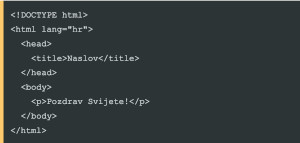

OD JEDNOSTAVNOG TEKSTA DO MODERNOG WEBA
Sve je počelo 1989. godine u CERN-u. Tim Berners-Lee je osmislio sustav koji bi istraživačima omogućio dijeljenje dokumenata. Taj sustav postao je poznat kao World Wide Web

HTTP HyperText Transfer Protocol - protokol za prijenos podataka.
URI Uniform Resorce Identified - adresa resursa na webu.